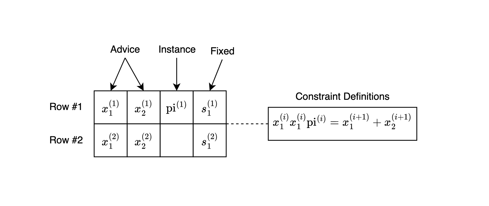

ZK Input Verification with PLONK/KZG
Background
Zero-Knowledge Proofs (ZKPs)
ZKPs allow a prover to convince a verifier that they know a value satisfying some condition, without revealing the value itself.
PLONK and KZG Commitments
- PLONK is a universal and updatable SNARK that supports efficient proofs over arbitrary circuits. It allows inputs to be committed using polynomial commitment schemes.
- KZG Commitments are polynomial commitments with succinct size and verification. They allow the prover to commit to a polynomial and later prove evaluations at specific points.
Usage in Trinity
Verifiable Inputs
In Trinity, input bits committed by the evaluator need to be verifiable—they must be provably constrained to binary values and committed in a zero-knowledge way.
Rather than computing a KZG commitment inside a circuit (which would be expensive due to multi-scalar multiplications), we leverage PLONK’s native use of KZG commitments for advice columns.
How It Works
- Setup: A Halo2 circuit is built where the evaluator’s input bit vector is placed in an advice column.
- Constraint: Each value is constrained to be a bit (0 or 1) using a simple custom gate: $$ s \cdot b \cdot (b - 1) = 0 $$
- Proof Generation: The prover runs Halo2’s KZG-based proving system.
- Commit Extraction: The resulting proof includes a commitment to the advice column—this commitment is extracted and reused in Trinity’s Laconic OT as the receiver’s commitment.
Code Summary
#![allow(unused)] fn main() { let circuit = BitvectorCommitmentCircuit { bitvector }; let proof = create_proof(...); let commitments = extract_commitments(&proof, 1); // Gets KZG commit to advice column let com = commitments[0]; }
This commitment becomes the receiver’s Com in Laconic OT.
Visual Overview

Advice Column: [ 1, 0, 1, 1, 0, 0 ]
Constraint: s * b * (b - 1) = 0 for all b
Commitment: Com(advice_poly)
Output: KZG Commitment (G1 point)
Benefits and Considerations
Advantages
- Verifiability: Inputs are guaranteed to be well-formed bitstrings, but you can extend checks to verify a signature or any computation over the bitstring data.
- Trust Shift: The evaluator’s commitment is now backed by a ZK proof.
- Reuse: Proofs are reusable across OT and other verification protocols.
Trade-offs
- Proof Overhead: Circuit setup and proof generation are heavier than Plain OT (raw KZG commitment).
- Performance: Halo2’s proving time and constraint system size must be managed.
Practical Example
- Evaluator Generates a Proof
#![allow(unused)] fn main() { let bitvector = vec![Fr::one(), Fr::zero(), Fr::one()]; kzg_commitment_with_halo2_proof(params, bitvector) }
- Extract Commitment
#![allow(unused)] fn main() { let com = circuit_output.commitment; // G1 commitment to advice column }
- Use in OT
#![allow(unused)] fn main() { let receiver = LaconicOTRecv::new(halo2params, &[Choice::One, Choice::Zero, Choice::One]); let com = receiver.commitment(); }